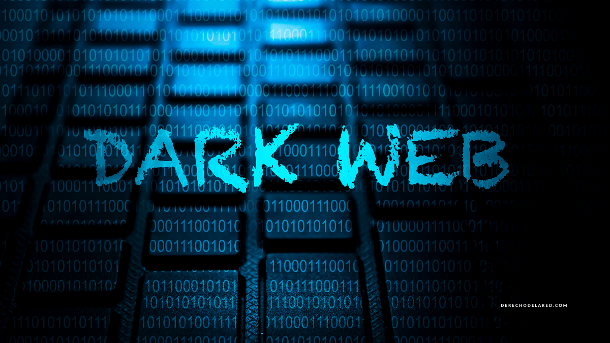

¿Qué es la dark web?
La dark web, también conocida como “internet oscura” o “darknet”, se suele considerar como un subconjunto de
la deep web. Sin embargo, a diferencia de la deep web, la dark web sí es indexable, tal como ocurre con la
“clearnet”, y también existen motores de búsqueda para la dark web. Algunos ejemplos son Candle, Not Evil,
and SearX.
Todas las actividades que se desarrollan en esta son anónimas de manera predeterminada, porque la única
manera de acceder a la dark web es mediante el navegador encriptado Tor. Ni los usuarios ni los
administradores de esta red revelan sus identidades ni ubicaciones a los demás. Por tanto, es muy difícil
desconectar servidores en la dark web o imponerles georestricciones a los usuarios.
En la dark web es donde se realizan las transacciones más turbias de todo el ciberespacio. Un estudio
realizado por investigadores del King’s College London, en el que se examinaron los contenidos de más de
2.700 páginas de la darknet, concluyó que aproximadamente el 60% de estas tenían contenidos ilícitos.
¿Cuál es la diferencia entre la dark web y la deep web?
Tal como mencionamos al comienzo del artículo, la dark web y la deep web suelen confundirse. La manera más
sencilla de entender la diferencia es así: no toda la deep web es dark web, pero toda la dark web es deep web.
La deep web es simplemente la parte de internet a la que no se puede acceder directamente desde motores de
búsqueda. Puede ser que esté protegida por contraseñas o que exista solamente en servidores de prueba. Acceder a
la deep web no requiere de un navegador especial o de protocolos únicos.
En contraposición, a la dark web solo se puede acceder mediante el navegador Tor. La naturaleza cifrada del
navegador implica que cualquiera que intente acceder a la dark web permanece en el anonimato de manera
predeterminada. Además, las URL de la dark web son muy diferentes a las direcciones web normales.
Todas las páginas de la dark web terminan por “.onion”, en vez de las terminaciones “.com” o “.org” que son
comunes en la internet superficial. Esto se hace de manera intencional, para que solamente los navegadores con
proxy específicos puedan acceder a estas páginas. También es muy difícil recordar las URL de las páginas de la
dark web, que es otra manera de ayudar a proteger su anonimato.
Si bien Tor es la manera más popular de acceder a las darknets, el Invisible Internet Project (I2P) es otro
proyecto descentralizado para el anonimato que usa principios similares a los de Tor. La I2P, que es una
internet autocontenida, permite a los usuarios enviar correos electrónicos, escribir blogs y chatear de manera
anónima, tal como lo harían en la internet normal.
¿La dark web y la deep web son ilegales y seguras?
Usar el navegador Tor o tratar de acceder a una página no indexada es perfectamente legal. El simple hecho de que
una página no permita el acceso a los motores de búsqueda no implica que esté desarrollando actividades
ilícitas.
De manera similar, iniciar sesión en el navegador Tor para explorar la dark web no implica que usted esté
infringiendo la ley. Lo que sí es ilegal es comprar artículos como drogas o documentos falsos, sin importar el
navegador que esté usando.
De hecho, hay que ser extremadamente cuidadoso al intentar navegar por la dark web. No haga clic en URL onion
desconocidos y verifique que la página sea auténtica antes de iniciar sesión. La dark web está repleta de
estafas y hackers dispuestos a robarle sus datos mediante el phishing. Algunos recursos útiles en Reddit para
verificar páginas onion son /r/deepweb, /r/onions y /r/Tor.
Si está pensando en acceder a la dark web, le recomendamos que use también una VPN para añadir una capa adicional
de encriptación y anonimato. También recomendamos el uso de una dirección desechable de correo electrónico,
encripte sus mensajes con PGP y desactive Javascript en su navegador Tor.
Ni el gobierno ni su proveedor de servicios de internet pueden rastrear su actividad en el navegador Tor, pero sí
sabrán que usted está en la red Tor. Esto puede llamarles la atención, así que debe tener mucho cuidado para
preservar su anonimato.
¿Quién creó la dark web?
Al igual que la internet como tal, la dark web fue creada por el gobierno de los EE.UU. para intentar crear redes
de comunicaciones para propósitos militares y de defensa.
El navegador Tor, que se usa para acceder a las darknet, fue diseñado para facilitar el intercambio anónimo de
información entre espías estadounidenses ubicados en distintas partes del mundo. El desarrollo de Tor comenzó en
la década de 1990 y salió a la luz como software públicamente disponible a comienzos de la década del 2000.
Si bien el propósito original de la dark web era facilitar las comunicaciones secretas, la naturaleza anónima de
la red también fomenta las actividades ilícitas. Con la ayuda del lanzamiento del Bitcóin en el 2009, la dark
web rápidamente se convirtió en una plataforma en la que los criminales podrían comprar y vender productos
ilegales.
© 2022 Juan Rivera Project Hacker.